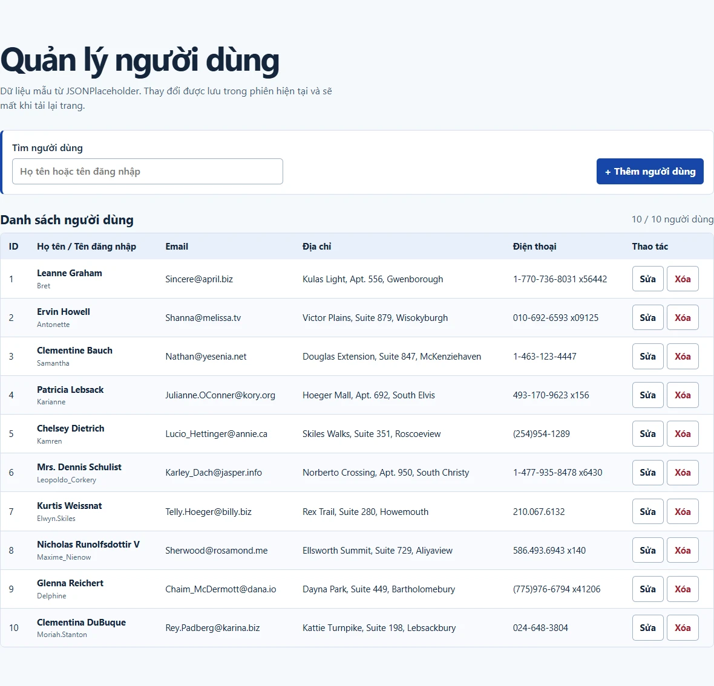

Báo cáo thực hành React CRUD
Bài thực hành xây dựng một danh sách người dùng có thể tìm kiếm, thêm, sửa và xóa bằng React 18. Báo cáo trình bày cách các component phối hợp, những lỗi cần xử lý và kết quả kiểm thử trên Vercel.
1. Mục tiêu và phạm vi
Ứng dụng thực hành bốn thao tác CRUD trên danh sách người dùng. Trang kết quả dùng HTML, CSS, React 18, ReactDOM và Babel Standalone qua CDN theo cách khởi tạo trong PDF. React gắn vào phần tử #root bằng ReactDOM.createRoot().
JSONPlaceholder cung cấp dữ liệu ban đầu. Thao tác thêm, sửa và xóa cập nhật state trong trình duyệt. Khi tải lại trang, danh sách được nạp lại từ API.
2. Cấu trúc component
App ├─ SearchForm ├─ AddUser │ └─ UserForm (khi thêm) └─ ResultTable └─ UserForm (khi sửa)
App nối ba component con. SearchForm nhận từ khóa, AddUser điều khiển hộp thoại thêm, còn ResultTable quản lý danh sách và chọn bản ghi cần sửa. Hai hộp thoại dùng chung UserForm vì có cùng các trường và quy tắc kiểm tra dữ liệu. Mỗi lần mở, form khởi tạo bản nháp từ bản ghi được truyền vào.
3. State, props và luồng dữ liệu
App giữ keyword và newUser vì sự kiện phát sinh ở một component con và kết quả được dùng ở component con khác. Trạng thái tải cũng đặt ở App để bảng có thể báo tiến độ và nút Thêm chỉ được bật sau khi dữ liệu sẵn sàng. Danh sách, bản ghi đang sửa và bản nháp form nằm ở component trực tiếp sử dụng chúng.
Bảng tính các hàng cần hiển thị từ users và keyword trong mỗi lần render. Nhờ vậy, nếu danh sách thay đổi khi bộ lọc đang bật, kết quả tự được tính lại. Bộ đếm lấy số hàng khớp và tổng số bản ghi từ cùng danh sách, nên vẫn phản ánh đúng sau khi thêm hoặc xóa.
- Tìm kiếm.
SearchFormgọionChangeValuekhi người dùng gõ.Appcập nhậtkeywordrồi truyền xuốngResultTableđể lọc lại danh sách. - Thêm người dùng.
AddUsergửi bản ghi quaonAdd.Appchuyển bản ghi xuống bảng qua propuser. Sau khi thêm, bảng gọionAddedđể xóa giá trị tạm ởApp.
| Component nhận | Prop | Vai trò |
|---|---|---|
| SearchForm | onChangeValue | Gửi từ khóa lên state cha. |
| AddUser | onAdd, disabled | Gửi bản ghi hợp lệ và điều khiển khả năng mở form. |
| ResultTable | keyword, user, onAdded | Lọc bảng, nhận người dùng mới và báo đã xử lý. |
| ResultTable | loadState, onLoadState | Hiển thị và cập nhật trạng thái tải danh sách. |
4. Cách triển khai CRUD
Đọc và tìm kiếm
useEffect trong ResultTable gọi API khi bảng được gắn vào trang. Khi tải xong, bảng dùng map() để hiển thị từng người dùng với ID làm key. Mỗi lần từ khóa thay đổi, filter() chạy trên danh sách trong bộ nhớ. trim() bỏ khoảng trắng ở hai đầu và toLowerCase() giúp tìm không phân biệt chữ hoa, chữ thường.
Thêm và cập nhật địa chỉ
UserForm lấy giá trị các ô nhập từ state draft. Khi sửa một trường của address, hàm cập nhật tạo bản sao của cả bản ghi và đối tượng địa chỉ. Ví dụ, khi đổi thành phố, thông tin đường và căn hộ vẫn được giữ.
setDraft((previous) => Object.hasOwn(previous.address, name)
? { ...previous, address: { ...previous.address, [name]: value } }
: { ...previous, [name]: value });Form yêu cầu họ tên và tên đăng nhập. Các giá trị chỉ có dấu cách cũng bị chặn. Khi form hợp lệ, bảng cấp ID dựa trên ID lớn nhất hiện có rồi thêm bản ghi vào cuối danh sách.
Sửa và xóa
Form sửa khởi tạo bản nháp từ người dùng được chọn và sao chép riêng address. Khi lưu, map() thay đúng bản ghi có ID tương ứng. Khi hủy, bảng tiếp tục hiển thị bản ghi cũ. Theo bước 7 của PDF, nút Xóa loại bản ghi ngay bằng filter() và hiển thị thông báo kết quả.
setUsers((previous) => previous.map((item) =>
item.id === updated.id ? updated : item));
setUsers((previous) => previous.filter((entry) =>
entry.id !== item.id));Hai phép cập nhật nhận danh sách trước đó từ React rồi trả về mảng mới. ID xác định hàng mục tiêu ngay cả khi đang lọc, vì vị trí trong bảng có thể khác vị trí trong danh sách đầy đủ.
5. Các lỗi và cách xử lý
Nút Hủy gọi hàm ngay khi render
Ở ví dụ bước 5, trang 6 của PDF, biểu thức onClick={setAdding(false)} chạy ngay khi React tạo nút. Khi người dùng vừa mở form, setter có thể đóng form trước khi họ thao tác. Bản triển khai truyền callback onClick={onClose} và đặt nút là type="button" để Hủy chỉ đóng hộp thoại khi được bấm.
Trùng ID sau khi xóa một hàng
Trang 6 cũng minh họa cấp ID bằng prev.length + 1. Với danh sách ID từ 1 đến 10, nếu xóa ID 2 thì danh sách còn 9 phần tử và ID được cấp tiếp là 10, vốn đã tồn tại. Trùng ID có thể làm trùng key và khiến thao tác sửa hoặc xóa theo ID đụng nhiều hàng. Bản triển khai lấy ID lớn nhất đang có cộng 1. Ca kiểm thử xóa một hàng rồi thêm đã nhận ID 11.
Địa chỉ thay đổi dù bấm Hủy
Bước 6 của PDF lưu ý về đối tượng lồng nhau. Nếu form giữ tham chiếu chung đến address và sửa trực tiếp, thay đổi có thể tác động lên bản ghi gốc trước khi lưu. Form tạo bản nháp với địa chỉ riêng và cập nhật theo cách bất biến. Kiểm thử đổi thành phố rồi hủy cho thấy địa chỉ trong bảng vẫn giữ nguyên.
Bảng chờ mãi khi API gặp lỗi
Đoạn tải dữ liệu ở bước 4 minh họa luồng thành công. Trong bản triển khai, response.ok được kiểm tra trước khi đọc JSON. Khi yêu cầu thất bại, giao diện hiện thông báo tải lại và giữ nút Thêm ở trạng thái tắt. Cách này cũng tránh cho người dùng thêm bản ghi trước khi dữ liệu gốc tải xong.
6. Kết quả kiểm thử và triển khai
Các ca dưới đây đã chạy bằng Chrome trên bản triển khai công khai. Hai trang được phục vụ qua HTTPS trên cùng domain và có liên kết qua lại.
Mã bài thực hành nằm trong public/react-crud/. Vercel nhận bản cập nhật từ nhánh main của kho GitHub và phục vụ các tệp HTML, CSS và JSX ở đường dẫn cố định. Trên trang demo, trình duyệt tải thư viện từ CDN, Babel biên dịch JSX và React gọi API dữ liệu mẫu.
| Ca kiểm thử | Kết quả quan sát |
|---|---|
| Tải danh sách | Bảng hiển thị 10 người dùng từ API. |
| Tìm theo tên và username | ervin và bReT mỗi từ khóa trả về đúng một người. Từ khóa không khớp hiện thông báo. |
| Thêm sau khi xóa | Form chặn khi thiếu họ tên. Bản ghi hợp lệ xuất hiện với ID 11 sau khi xóa một hàng mẫu. |
| Sửa địa chỉ | Hủy giữ nguyên thành phố cũ. Lưu cập nhật thành phố và giữ thông tin đường. |
| Xóa bản ghi | Hàng mục tiêu biến mất ngay khi bấm Xóa. |
Để chạy lại bài kiểm thử, mở ứng dụng, thử từ khóa bret rồi xóa từ khóa. Xóa một hàng mẫu, thêm người dùng có tên đăng nhập riêng, thử sửa địa chỉ và hủy một lần trước khi lưu. Tải lại trang để đưa danh sách về dữ liệu mẫu ban đầu.

7. Tổng kết và tài liệu
Bài thực hành cho thấy khi nào nên đưa state lên component cha và khi nào nên giữ state trong component trực tiếp sử dụng. Cách tách bản nháp khỏi danh sách giúp thao tác Hủy hoạt động đúng. Việc dùng ID làm khóa cho phép tìm đúng bản ghi khi thêm, sửa và xóa liên tiếp.
- Tài liệu thực hành Tài liệu hướng dẫn lập trình React cơ bản (CRUD), trang 1–8.
- API dữ liệu mẫu JSONPlaceholder.
- Tham khảo cách tổ chức mục và trình bày kết quả trong báo cáo mẫu IT4409.
- Mã nguồn React của bài thực hành.